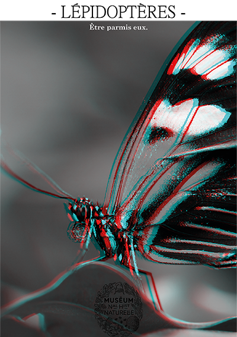
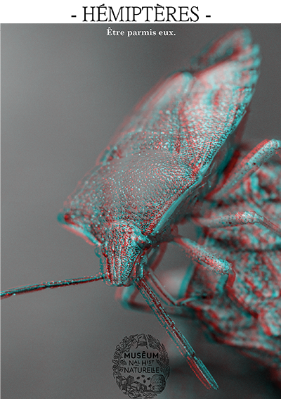
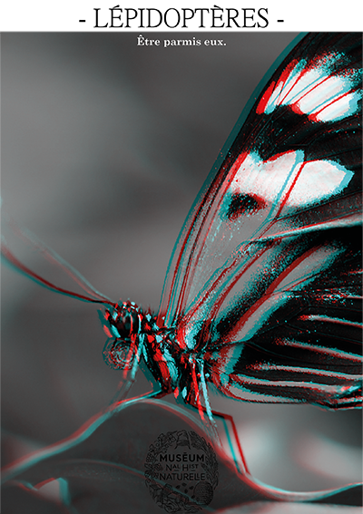
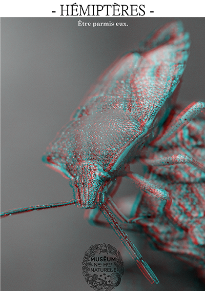

Le Muséum National d’Histoire Naturelle souhaite diffuser une collection pour informer de la diversité du monde entomologique, l’étude des insectes. L’objectif de communication visuel était d’émerveiller pour instruire et mettre en avant la préciosité des insectes, ce qui les rends spéciales. J’ai utilisé l’anaglyphe afin de permettre cette mise en avant des caractéristiques de chaque insectes.Voici l’aperçu des 3 pages de couverture des coffrets pour leur collection, avec 2 marque-pages et une affiche recto-verso. Après une initiation sur After Effect, j’ai pu réaliser un petit spot afin d’animer ces insectes.
 


